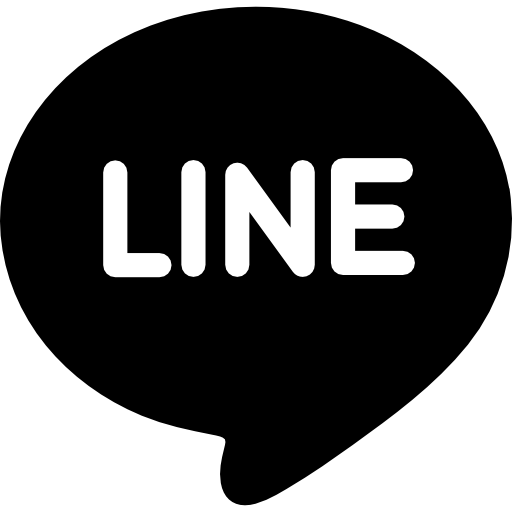
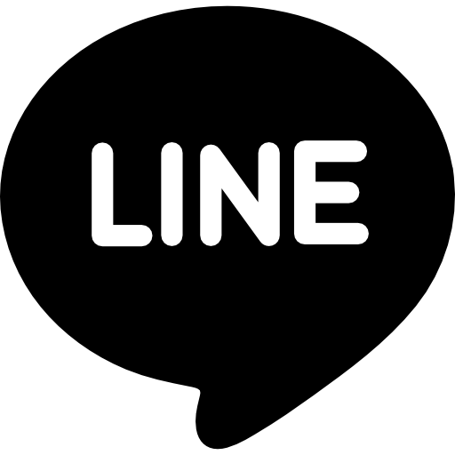

HIGHLIGHTS
GNDR HIGHLIGHTS
어디 한번 봅시다.
그림과 작업을 위해 ARTGROUP의 회원들은 정기적으로 모임을 갖습니다.그림 작업이나 작품의 콘티, 설정 등은 카페나 식당에서 주로 합니다. 보통은 A4용지에 원하는 설정이나 여러 양식을 그려 모임 회원들과 의견 교환 후 가장 나은 아이디어로 진행이 됩니다.
지금까지 총 6년간 여러 아이디어와 작품 구상을 하였으며 앞으로도 계속 창작활동을 할 것입니다.
ARTGROUP은 총 9명으로 구성되어있으며, 소설가, 실용음악가, 일러스트레이터, 만화가 등으로 예술 및 창작활동과 밀접한 취미 혹은 전공을 가진 사람들의 모임입니다.
서로의 작품에 대한 앨범커버나 표지 외주 등의 활동을 통해 예술적 상호 가치를 높이는 것이 ARTGROUP의 목표입니다.
그 중 GANADARA는 만화 및 웹코믹의 분야를 도맡아 그리고 있습니다.
PROCESS
제작 과정입니다.
(좌) 스케치 및 러프 , (우) 펜터치 및 빗금
전체적인 작품의 창작 과정은 아이디어 구상 후 퇴고, 검토 이후 아이디어를 스케치하여 콘티를 짜게 됩니다. 위 사진 왼쪽의 이미지가 콘티 과정의 작업물로 매우 거친 선과 정돈되지 않은 날 것의 모습입니다. 이 과정은 상당한 수정을 거치므로 대충 표시만 해두는 경우가 많습니다. 아날로그의 경우엔 샤프나 연필로 과정을 진행합니다.
이후, 스케치본이 완성되면 펜터치 및 빗금을 긋습니다. 윤곽을 잡고 그림의 선을 진하게 잡게됩니다. 사실상 그림의 가장 중요한 부분이라고 볼 수 있겠습니다. 빗금의 경우엔 연출적인 면이 첨가될 경우 조금 더 나중에 실행할 수도 있습니다.
여기까지 완성했다면 밀도가 낮긴하지만 그럴싸한 작업물이 나오게 됩니다.
이후 연출 요소를 추가하고, 흔히 땡땡이라 불리우는 '스크린톤'을 추가하여 명암을 주게 됩니다. 후처리의 부분에는 최종 수정과 추가적인 터치를 통해 최종 결과물의 개성과 밀도를 살립니다.
보통 만화 작업은 크게 2가지로 나뉘는데, 흑백으로만 나타나는 모노크롬톤의 만화. 흑백+여러 농도의 회색으로 이루어지는 그레이스케일풍의 만화가 있습니다.
전자의 경우엔 검정과 하양만으로 모든 것을 표현해야하기 때문에 작가 나름의 연출력과 기법에 따라 퀄리티가 나뉘게됩니다.
후자의 경우 회색으로 명암의 채색이 가능해지기 때문에 더욱 다채로운 표현이 가능합니다. 하지만 기본기의 실력이 높아야한다는 단점도 있습니다.
ARTWORKS
최근 볼만한 그림들.
새로운 복음과 도망치는 설법
2024년 1분기부터 작업에 들어간 '새로운 복음과 도망치는 설법'입니다.
끊임없는 '선과 악의 꼬리무는 굴레'에 신을 의심하게되는 사제와 인간을 위해서라도 악이 있어야한다 믿는 무당의 오컬트 판타지 만화입니다. 과연 선과 악을 구분할 수 있는 것은 신 뿐일까요? 고뇌하는 신자에게 던지는 화두.
차와 배경을 그리는 것이 매우 힘들었던 작품이었습니다. 이탈리아 풍의 건물은 죄악이네요.
하늘 위에도 끝이 있길 part2
2022년부터 구상 및 작업에 들어간 '하늘 위에도 끝이 있길'의 2번째 시리즈입니다.
초고도문명을 이룩한 인류의 대피처는 지구의 상공 500km. 지식은 인류애를 붕괴시키는 미끼이자 재앙의 탄생처인가?
변종 포스트 아포칼립스 세계에서 벌어지는 인리에 관한 비참한 이야기입니다. 시간이란 무엇일까?
'창공의 노스탤지어'의 경우엔 배경이 고도의 발전문명이다보니 상상 밖의 디자인을 그리는 것에 힘을 쏟아부었습니다.
SHARE
 
